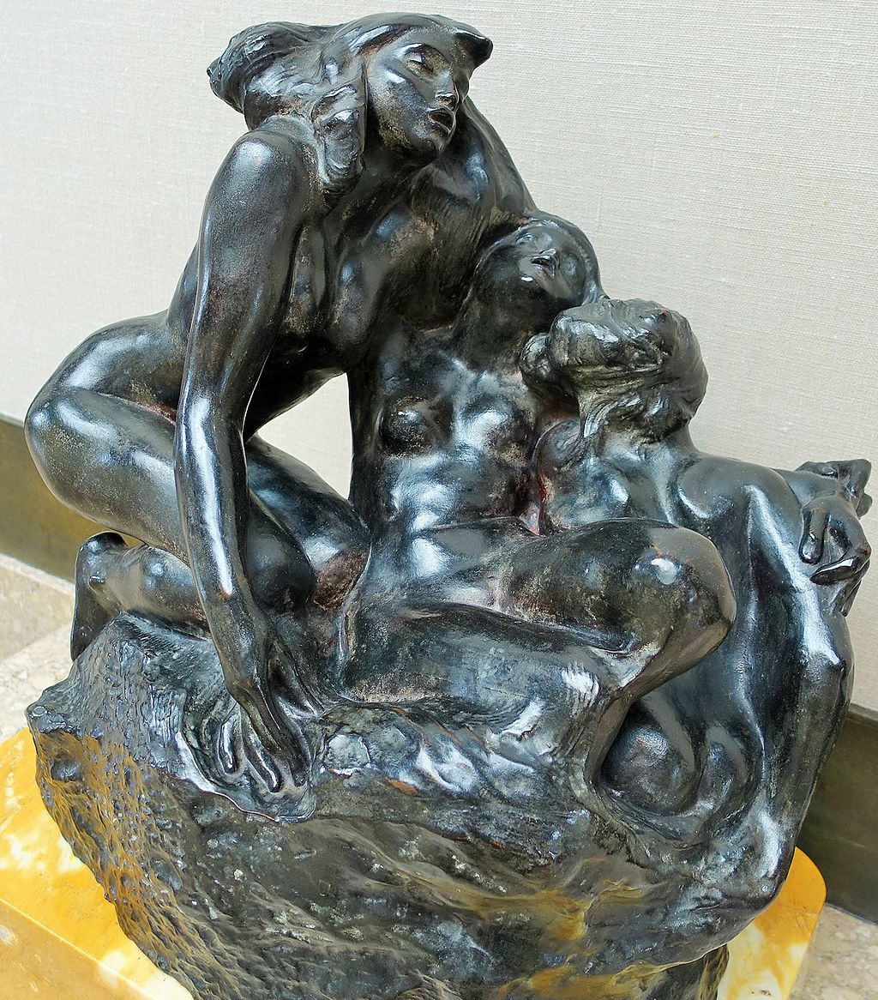

<head>
<meta charset="UTF-8" />
<meta name="keywords" content="drawing, painting" />
<meta name="description" content="drawings by Sunjy" />
<title>Sunjy</title>
<link rel="shortcut icon" type="image/x-icon" href="../../mImages/mCommon/favicon.ico" media="screen" />
<link rel="stylesheet" type="text/css" href="../../mCsses/mCommon/mCssA.css" />
<link rel="stylesheet" type="text/css" href="../../mCsses/mCommon/mCssB.css" />
<link rel="stylesheet" type="text/css" href="../../mCsses/mCommon/mCssC.css" />
<link rel="stylesheet" type="text/css" href="../../mCsses/mCommon/mCssD.css" />
<link rel="stylesheet" type="text/css" href="../../mCsses/mContent/mCssA.css" />
<link rel="stylesheet" type="text/css" href="../../mCsses/mContent/mCssB.css" />
<link rel="stylesheet" type="text/css" href="../../mCsses/mContent/mCssC.css" />
<link rel="stylesheet" type="text/css" href="../../mCsses/mContent/mCssD.css" />
</head>
<script type="text/javascript" src="../../mScripts/mContent/mContentAA.js" /></script>
<script type="text/javascript" src="../../mScripts/mContent/mContentAB.js" /></script>
<script type="text/javascript" src="../../mScripts/mContent/mContentAC.js" /></script>
<script type="text/javascript" src="../../mScripts/mContent/mContentAD.js" /></script>
<script type="text/javascript"></script> 
<script type="text/javascript">
document.write('<div class="mImgAbsolute"></div>');
/*
document.write('<p class="mFontSizeBColor" />From a white paper...</p>');
document.write('<table class="center"><tr><td>');
document.write('');
document.write('</td></tr></table>');
*/
</script>


<script type="text/javascript">
document.write('<p class="mFontSizeBColor" />The Sirens </p>');
document.write('<p class="mFontSizeSColor" />“The Sirens,” modeled by Auguste Rodin, depicts sea nymphs from Greek mythology who lured sailors to their destruction through their enchanting song.<br><br>In Greek mythology, the Sirens were dangerous creatures, who, with their enchanting music and voices, caused shipwrecks on the rocky coast of their island.<br><br>The Sirens were the companions of young Persephone, and they were given wings by Demeter to search for Persephone when she was abducted.<br><br>After failing to find Persephone, Demeter cursed the Sirens for failing to intervene in the abduction of Persephone.<br><br>The most famous Sirens’ literary reference is in Homer’s Odyssey. Odysseus was curious to hear the Sirens sing, and on the advice of Circe, he had all of his sailors plug their ears with beeswax.  <br><br>He ordered his men to tie him to the mast without the earplugs and to leave him tied tightly to the mast, no matter how much he would beg.<br><br>When Odysseus heard their beautiful song, he ordered the sailors to untie him, but they bound him tighter. When they had passed out of earshot, Odysseus was released.<br><br>Post-Homeric authors state that the Sirens were fated to die if someone heard their singing and escaped them. Thus after Odysseus passed by, they flung themselves into the water and perished.<br><br>Sirens in Greek myth combine women and birds in various ways. Birds were chosen because of their beautiful songs. In early Greek art, Sirens were represented as birds with a women’s head.<br><br>Later, they were portrayed as female figures with the legs of birds, with or without wings, playing a variety of musical instruments, especially harps.<br><br>Lather in Classical Greek and Hellenistic Art, Sirens were sometimes depicted as beautiful women, whose bodies, not only their voices, are seductive.<br><br>This seductive image is the approach that Rodin has taken in this sculpture of his imagined Sirens.<br><br>Like many other works by Rodin associated with water, the fluid shapes suggest a smooth sensuality, which in “The Sirens” stands in sharp contrast to the women’s malicious behavior. <br><br> Rodin conceived of “The Sirens” in 1887 when he worked to create a definitive plaster, which was used as the basis for many of bronze casts and studio marble versions.<br><br>He then miniaturized them and placed them in his aesthetic prison, “The Gates of Hell.” These figures can be seen halfway up the left panel of The Gates of Hell.<br><br>As a stand-alone sculpture, Rodin’s Sirens continue to lure us today with their smooth wave-like bodies and silent song.<br></p>');
document.write('<table class="center" /><tr><td>');
document.write('<br>In Greek mythology, the Sirens were dangerous creatures, who, with their enchanting music and voices, caused shipwrecks on the rocky coast of their island.<br><br>The Sirens were the companions of young Persephone, and they were given wings by Demeter to search for Persephone when she was abducted.<br><br>After failing to find Persephone, Demeter cursed the Sirens for failing to intervene in the abduction of Persephone.<br><br>The most famous Sirens’ literary reference is in Homer’s Odyssey. Odysseus was curious to hear the Sirens sing, and on the advice of Circe, he had all of his sailors plug their ears with beeswax.  <br><br>He ordered his men to tie him to the mast without the earplugs and to leave him tied tightly to the mast, no matter how much he would beg.<br><br>When Odysseus heard their beautiful song, he ordered the sailors to untie him, but they bound him tighter. When they had passed out of earshot, Odysseus was released.<br><br>Post-Homeric authors state that the Sirens were fated to die if someone heard their singing and escaped them. Thus after Odysseus passed by, they flung themselves into the water and perished.<br><br>Sirens in Greek myth combine women and birds in various ways. Birds were chosen because of their beautiful songs. In early Greek art, Sirens were represented as birds with a women’s head.<br><br>Later, they were portrayed as female figures with the legs of birds, with or without wings, playing a variety of musical instruments, especially harps.<br><br>Lather in Classical Greek and Hellenistic Art, Sirens were sometimes depicted as beautiful women, whose bodies, not only their voices, are seductive.<br><br>This seductive image is the approach that Rodin has taken in this sculpture of his imagined Sirens.<br><br>Like many other works by Rodin associated with water, the fluid shapes suggest a smooth sensuality, which in “The Sirens” stands in sharp contrast to the women’s malicious behavior. <br><br> Rodin conceived of “The Sirens” in 1887 when he worked to create a definitive plaster, which was used as the basis for many of bronze casts and studio marble versions.<br><br>He then miniaturized them and placed them in his aesthetic prison, “The Gates of Hell.” These figures can be seen halfway up the left panel of The Gates of Hell.<br><br>As a stand-alone sculpture, Rodin’s Sirens continue to lure us today with their smooth wave-like bodies and silent song.<br>" />');
document.write('</td></tr></table>');
</script>


